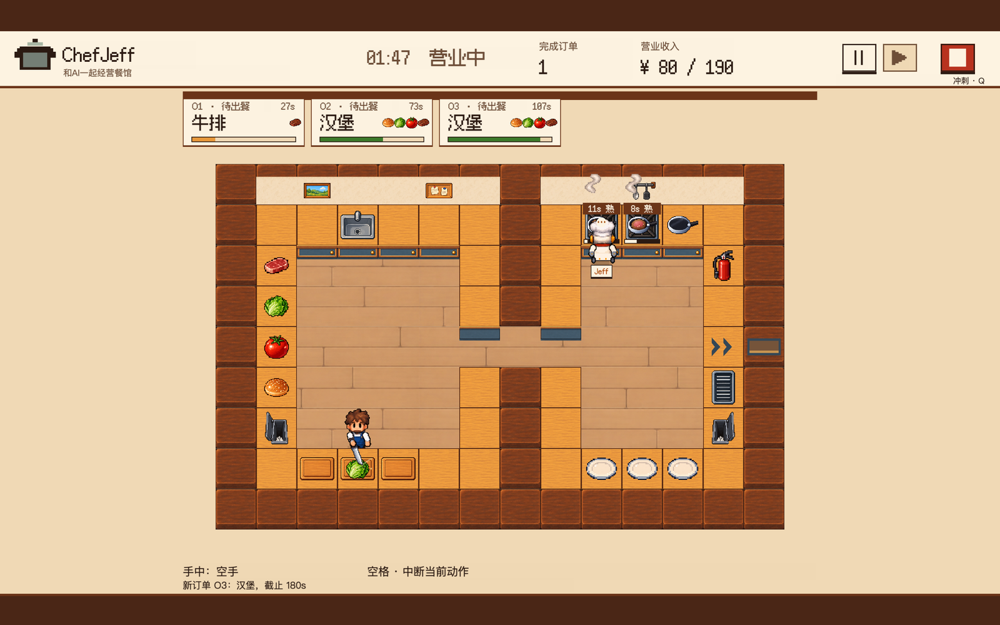
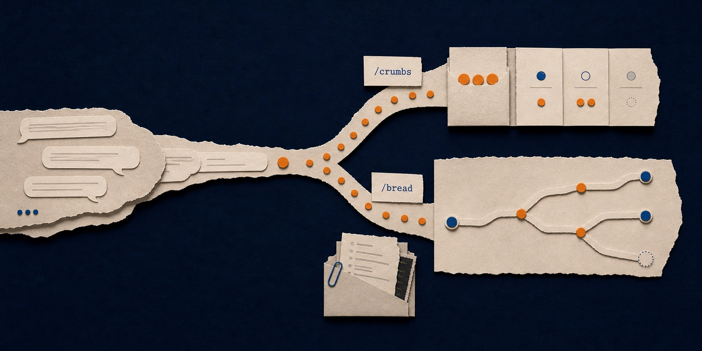

ChefJeff
把人与 AI 放进同一间厨房，观察协作如何发生。
与大模型驱动的厨师 Jeff 一起切菜、烹饪、出餐，在限时订单中协调分工。 通过可配置关卡、对局记录与离线回放，为研究实时人机协作提供可扩展的实验环境。
Python · Cocos Creator · 公开测试版 0.6.0-beta.2
- 180s每局实时协作
- 3 张地图配置驱动关卡
- Replay离线回放与分析

Media · Technology · Lifeworld
Hi，我是王礼耀。复旦大学在读博士生，目前正在伦敦国王学院数字人文系进行联合培养。 我的研究方向是媒介学、注意力理论、城市传播，聚焦人与机器的感知方式与边界，自动驾驶、电子游戏是我主要的研究对象。
KCL 个人主页把人与 AI 放进同一间厨房，观察协作如何发生。
与大模型驱动的厨师 Jeff 一起切菜、烹饪、出餐，在限时订单中协调分工。 通过可配置关卡、对局记录与离线回放，为研究实时人机协作提供可扩展的实验环境。
Python · Cocos Creator · 公开测试版 0.6.0-beta.2

把长对话里遗漏的要求与分叉的思路重新捡起来。
Breadcrumbs 是一组用于核对与复盘长程 AI 对话的本地 skills。 /crumbs 逐项核查漏答、漏做与待确认事项，/bread 沿用户输入重建讨论路径并生成可追溯的交互式 HTML。
本地处理 · 独立 evaluator 核验 · Python 标准库
